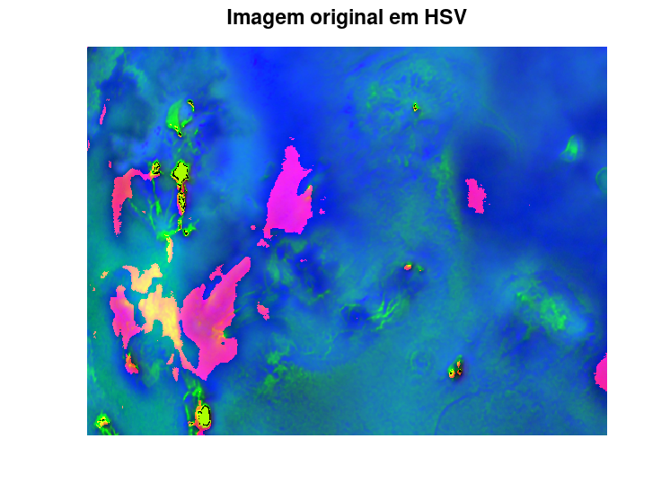
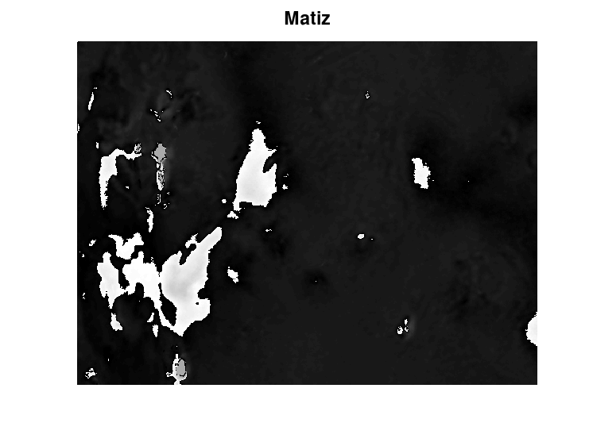
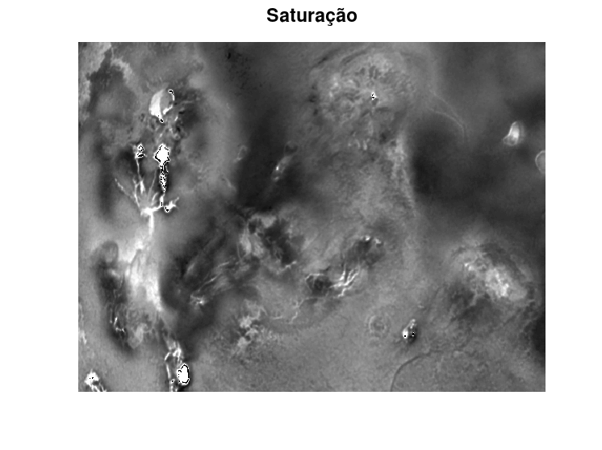
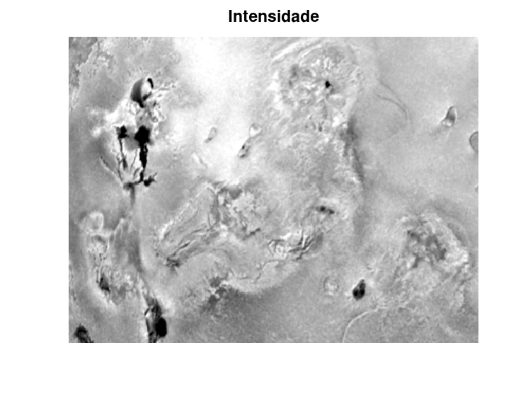
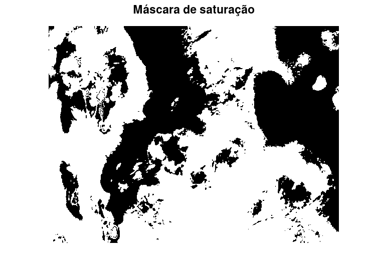
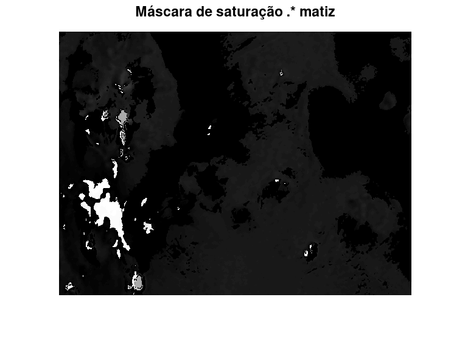
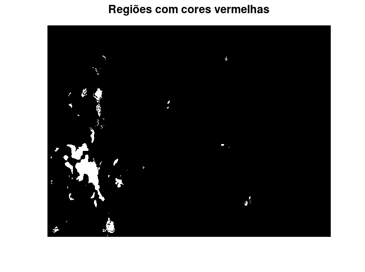
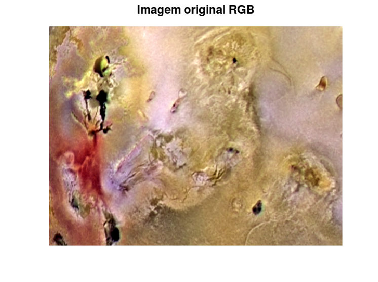
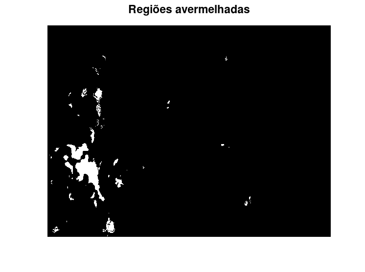

Estudante: André Alfonso Peixoto
GONZALEZ, R; WOODS, R; EDDINS, S. Digital Image Processing Using MATLAB 2. 2. ed. Gatesmark Publishing, 2009. Mathworks Stack Exchange Wikipedia
Utilizando a imagem da lua de Jupiter, 1. segmente as regiões de ‘cor avermelhada’. 2. visualize e comente arquivo: Fig0642(a)(jupiter_moon_original).tif
pkg load signal; pkg load symbolic; pkg load image;
rgb = im2double(imread("Fig0628(b)(jupiter-Io-closeup).tif")); [M, N, ~] = size(rgb); figure; imshow(rgb,[]); title("Imagem original");
HSV = rgb2hsv(rgb);
figure;
imshow(HSV,[]);
title("Imagem original em HSV");
H = HSV(:,:,1); S = HSV(:,:,2); V = HSV(:,:,3); figure; imshow(H,[]); title("Matiz"); figure; imshow(S,[]); title("Saturação"); figure; imshow(V,[]); title("Intensidade");
sbw = double(im2bw(S,0.35));
figure;
imshow(sbw,[]);
title("Máscara de saturação");
hue = H.*sbw; figure; imshow(sbw,[]);title("Máscara de saturação"); figure; imshow(H,[]); title("Matiz"); figure; imshow(hue,[]); title("Máscara de saturação .* matiz");
hue2 = zeros(M,N);
hue2(hue>0.5)=1;
figure;
imshow(hue2,[]);
title("Regiões com cores vermelhas");
figure; imshow(rgb,[]); title("Imagem original RGB"); figure; imshow(hue2,[]); title("Regiões avermelhadas");